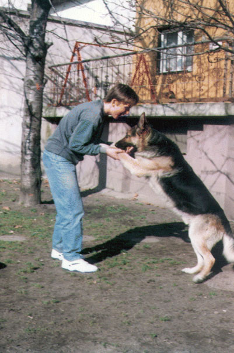
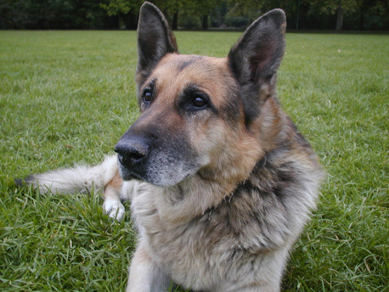

Valahol messze, az Északi
Összekötő Hídtól pár száz méterre, az ártéren van egy kis homokpad, ami valószínűleg senkit sem
érdekel rajtam kívül. Valóban nem sok érdekes van rajta; mélyen bent fekszik a folyómederben, csak
igen alacsony vízállásnál bukkan elő, mint amilyen mostanában van. Ez a homokpad minden évben éppen
december 25-én válik olyannyira érdekessé, hogy felkeressem. Ezen a helyen búcsúztam el ugyanis
2003-ban leghűségesebb barátomtól, Alfától, a német juhásztól.
Alfa 1991 augusztus 21-én
született, és jó két hónappal később került hozzánk. Apja, aki a Dzseki névre hallgatott, csodaszép
ordas farkaskutya volt, valódi farkas felmenőkkel, ám sajnos rövid élete volt. Mindössze nyolc
hónapos kölyök volt, amikor a házunkkal szemközti építkezésre betörtek. A kutya ugatott, a betörők
pedig el akarták hallgattatni, téglákkal dobálták meg a kerítés tetejéről. A kutya megsebesült, mire
a cigányok átmásztak, hogy elintézzék. Mert persze cigányok voltak. Akkor lepődtek meg, amikor a
harcképtelennek hitt kutya támadott, és egyiküknek kiszakította a combját, épp az ütőeret. A pasas
összeesett, és mivel nem tudott átmászni a kerítésen, ott vérzett el; a másik cigánynak két ujja
maradt a kertben, a harmadik el tudott pucolni. Szerencsétlen kutyát a szomszéd találta meg reggel,
ott feküdt a halott mellett, és nem tudott felkelni. A rendőrök rövidesen elfogták a másik két
betörőt, és szerencsére akkor még tudták, miből ért a cigány: kezüket-lábukat összetörték. De ez a
kutyán már nem segített. Teljesen megvadult, még a madarakat is megtámadta az udvarban, csak a
családot tűrte el maga körül, ráadásul a sérült csípője sohasem gyógyult meg teljesen. Ötéves korára
már alig tudott járni, diszpláziás lett. Sajnos máris gondolkodni kellett az
utódlásról.
Különös, de már jóval azelőtt, hogy a kiskutya megérkezett volna, élt bennem egy
kép róla. A nevét - Alfa - is jó egy évvel azelőtt adtam neki, hogy egyáltalán megszületett volna.
Sokan próbálták kitalálni, honnan jött a név: görög betű, áruházlánc, szovjet
tengeralattjáró-osztály, de egyik sem. Alfának egy nagyon okos delfint hívtak A delfin napja című,
valóságos történetre alapuló filmben, aki mint egy befogott delfin első utódja kapta ezt a nevet.
Alfa, így emlegettem a leendő kiskutyát már jóval azelőtt, hogy megérkezett.
Alfát végül
hat-nyolc kölyök közül választottuk ki. Nagyban tesztelgettük a tenyésztőnél, az udvaron a
kölyköket, dobáltuk nekik a kulcscsomókat, húzogattuk velük a rongyot, s már ki is választottunk
egyet, amikor a tenyésztő megszámolta őket, és megállapította, hogy egy hiányzik. Bementünk a házba,
és hamarosan meg is lett a hiányzó kölyök: a fürdőszobába slisszolt be, és éppen a testvérkéi
evőtálját nyalta tisztára. Beléptünkre maszatos képpel felnézett, és amolyan "na, mi van?"
arckifejezéssel bámult ránk. Aztán rám nézett, és egy percre találkozott a tekintetünk.
Akkor
láttam először azt a tiszta, okos tekintetet, amit sem előtte, sem azóta nem láttam egyetlen kutyán
sem. Láttam más kutyaszemeket: láttam okosat, hűségeset, félénket és méltóságteljeset, de olyat,
mint Alfáé, soha. Ezt a kölyköt vittük haza. Óriási kiskutya volt: széles háta volt, akár egy
hurkatacskónak, oszlopszerű lábai és medvebocsra emlékeztető feje. A tenyésztő elgondolkodva nézte,
ahogy az autóba tesszük, és így szólt:
- Azt ugye tudják, hogy ezt a kutyát nagyon meg kell
majd fogni?
- Miért?
- Mert óriási lesz. Ha jól nevelik, remek kutya lesz belőle, de ha
elkapatják, sok baj lesz vele.
A tenyésztőnek igaza volt: Alfa, azaz törzskönyvi nevén
Attila-közi Ali ritka óriási farkaskutyává cseperedett, és tényleg remek kutya lett.
Egyelőre
azonban kajla kölyökként kóricált a világban, és igyekezett mindent megrágni, ami megrágható. Volt
már kutyánk addig is, nagyjából tudtuk, mit kell csinálni velük, hiszen az öreg Dzseki is volt
valaha kölyök, és anyám gyerekkora óta kutya mellett élt. Két kutyát azonban még sohasem tartottunk
egyszerre, különösen nem egy idős, és ráadásul különösen agresszív kant egy kölyök mellett. Eleinte
féltettük Alfát Dzsekitől, nem tudtuk, nem fog-e rátámadni féltékenységből. Azóta persze tudjuk,
hogy épeszű kutya ilyet nem tesz, s azt is csak később értettük meg, hogy valójában milyen keveset
tudtunk a kutyákról akkoriban. Betéve tudtuk ugyan az akkor megjelent kutyatartási és kutyakiképzési
szakkönyveket, de nem értettük a kutyát. Kutyát tartani és kutyásnak lenni: két különböző dolog! Ha
az ember érti a kutyát, minden rezdülését érzi, együtt mozdul vele; a barátság, ami ember és kutya
közt szövődik, valahol félúton van a szerelem és aközött a szoros kötelék között, ami nagy veszély
idején szövődik igaz bajtársak közt.
Tizenöt éves voltam, amikor Alfa a házhoz került, és
őszintén szólva nem sokat jelentett nekem. Kiskutya, aranyos, persze, de nem különösebben érdekelt.
Akkoriban még nemigen volt célom az életben, mint az sokakkal előfordul tizenöt évesen; érdeklődésem
összevissza csapongott, hol ebbe, hol abba fogtam bele. Inkább a nem túl jó családi hangulat elől
menekülve találtam ki először, hogy elviszem Alfát sétálni. Akkoriban nem volt nálunk szokásban az
ilyesmi. Dzsekit szinte sohasem vittük ki az utcára, ha mégis, akkor apám rövid pórázon, fojtós
nyakörvvel cibálta végig az utcán, valami olyan, meglehetősen homályos indoklással, hogy a kutya
kiszámíthatatlan és agresszív. Igaz, elvolt a kutya a jókora kertben is, de sohasem játszott más
kutyákkal, nem szocializálódott, és a betörés után még inkább befordult. Ma már tudom, hogy a lehető
legrosszabb döntés volt a kertbe zárva tartani szegény kutyát. Szóval egyszer csak előálltam az
ötlettel, hogy elviszem Alfát sétálni, mire szüleim elképedve néztek rám, és azt kérdezgették,
minek? Hát, hogy szokja a nyakörvet, mondtam, és ez megfelelő ürügy volt: engedélyt kaptam a kutya
megsétáltatására, és addig sem kellett otthon kotlanom. Mentünk is.
A közeli lakótelepen
mászkáltunk, a kiskutya lelkesen cibált maga után, amikor egyszer csak szembejött velünk egy ír
szetter. A szetterek roppant játékosak, ez is mindjárt körbeugrándozta az én három hónapos, kajla
kis farkasom, aki vidáman visszatappancsolt. No, hát ilyesmi még nem volt a praxisunkban, hogy a
kutyánk egy másik kutyával játsszon. Apám nyomán úgy tudtam, hogy két kutya csakis verekedni
szokott, ha összetalálkoznak. No mindegy, ezek szerint mégsem. A szetter gazdája is odaért,
megcsodálta a szép kis német juhászt, beszélgettünk egy keveset, majd megkérdezte, miért nem engedem
el Alfát a pórázról?
- Elengedni? Elszökik...
- Dehogy szökik, miért szökne?
- Hát
mert... mert...
De tényleg, gondoltam, miért szökne? Levettem a pórázt Alfáról, és azon
imádkoztam, nehogy elpucoljon a vakvilágba. Csodák csodája, tényleg nem ment sehová, csak
futkározott a szetterrel, és sohasem távolodott tíz méternél messzebb. Ezt a szokását egyébként
egész életében megtartotta: tíz méter, ennyit engedélyezett magának. A játék végeztével visszatért,
és engedelmesen tűrte, hogy ráadjam a pórázat.
- Látod, nem kell félteni a kutyát - mondta a
szetter gazdája. - Bízzál a kutyádban, és ő is bízni fog benned!
Azt hiszem, akkor értettem
meg, hogyan is kell viszonyulni a kutyához. A kutya nem egy oktondi állat, aki az első óvatlan
pillanatban beszalad az autó alá, világgá szalad vagy széttép valakit. A kutya nevelhető, kezelhető
és engedelmes. A kutya olyan, amilyennek én nevelem! Nagyszerű érzés volt.
Az elkövetkező
néhány hétben gyakran vittem Alfát sétálni, és egyre gyakrabban engedtem el a pórázról. Észrevettem,
hogy magától is követ, nem kell hívogatnom; ma már tudom, hogy ez az alapvető falkaösztön, ami
minden egészséges kutyában megvan. Rövidesen megtanulta, hogy nem szabad lemennie az úttestre. Négy
hónaposan már biztonsággal sétáltattam póráz nélkül, sohasem szaladt le a járdáról, ráadásul
mindenféle különösebb tanítás nélkül, maga figyelte meg, hogy a gazdi sohasem megy le oda, azon a
peremen túl, ahol alacsonyabban van az aszfalt. Fantasztikusan intelligens, és nagyon nyugodt
kiskutya volt. Nagyon játékos is volt, még idős korában is.
Időnként azonban nagyon is
harciasnak is bizonyult. Már két-három hónaposan is dühösen ugatta az idegeneket. Igaz, Dzseki ezért
mindig legorombította. Az öreg farkas élete utolsó nagy feladatául tűzte ki, hogy a kis Alfából
igazi kutyát faragjon. Alfa érkezésének napjától kezdve megemberelte magát, sohasem láttuk
sántítani. Biztosan nagy fájdalmai voltak, de sohasem mutatta Alfa előtt. Lassan járt, keveset
mozgott, de kínosan ügyelt, hogy ne látsszon a gyengesége. A tiszteletlenség legkisebb jelét is
dühödten torolta meg a serdülő Alfán. Ha csak egy lépéssel is előtte haladt át az ajtón, ha ugatni
mert, amikor ő ugatott, vagy ha felemelt lábbal mert pisilni az udvaron: az öreg farkas máris ott
termett, és félelmetes hörgéssel esett neki, villogó agyarakkal, őrjöngve tépte a bundáját, úgy
látszott, menten széttépi. Valójában sohasem bántotta a kölyköt, soha egy karcolás sem esett rajta.
Sőt, olyannyira szerette, hogy néha még azt is megengedte, hogy a szőnyegére feküdjön, vagy a
labdájához nyúljon. Ez nagy dolog volt tőle!
Alfa öt hónaposan került kutyaiskolába, s persze
az én feladatom volt minden szombaton és vasárnap elvinni. Nálunk a hobbi nem úgy működött, mint más
családoknál, hogy kedvtelésből csinálja az ember, nekem parancsra kellett hobbit választanom. Egy
időben minden szombaton fotószakkörre voltam kirendelve, most pedig kutyaiskolába. A fenének sem
hiányzott a korán kelés hétvégén is, de nem volt apelláta, ha nem vittem Alfát, azonnal üvöltözés
volt, így hát elvittem az iskolába. Akkoriban az Országos Munkakutya Sportegyesület (OMSE)
Északnyugati Kutyakiképző Iskolája volt az egyik legjobb a szakmában, és ez aránylag közel is volt
hozzánk, a Rákos-patak partján, közel a patak torkolatához. Ma is megvan, de már nagyon leadta a
színvonalat. Vezetője, Szopó Béla akkoriban országosan elismert kiképző szakember volt. Mára
megöregedett, és a kor erősen az agyára ment. Beszélik, hogy a valaha aranykezű kutyamester, akinek
mindene a kutyák voltak, ma már bottal üti a kutyáit.
A kutyaiskola baromi unalmas dolognak
tűnt. Nyolckor kezdődött, két órán át alaki gyakorlatokat vettünk, majd rövid szünet után
csibészeltünk. Az alaki gyakorlatozás abból állt, hogy tizenöt-húsz kutyás körbe-körbe masírozott a
középen álló kiképző körül, és időnként leültette, lefektette vagy felállította kutyáját, a kiképző
utasításai szerint. Az első félóra után halálra untam magam; az más kérdés, hogy a kutyák valóban
gyorsan megtanulták az alaki fogásokat. Ül, áll fekszik, lábhoz igazodik, hozzám... Alfa alig
négy-öt lecke után már bármikor szabályosan tudott lábhoz igazodni, akár póráz nélkül is, és hamar
megtanult helyben maradni is. Ám mindez csupán érdektelen dresszírozás lett volna, ha nem történik
valami.
Már vagy három hete jártunk az iskolába. A szokásos körbe-körbe masírozás ment éppen,
és a kiképző ül-t vezényelt. Mindenki leültette a kutyáját, én is. Álltunk, vártuk a "tovább"
parancsot. Egyszer csak valami meleget és nedveset éreztem a kezemen. Lenéztem: Alfa nyalta meg a
kezem, hogy figyeljek rá, és nézett fel azokkal a nagy, barna szemeivel. A szemével pedig azt
mondta:
- Tudom, gazdi, hogy unod, én is unom, de ezt muszáj megcsinálni. Jó kutya akarok
lenni, és ez az ember ott, a kör közepén segít nekünk. Ne hagyjuk abba, csináljuk végig,
kérlek!
Ez volt az első eset, hogy megértettem, amit egy kutya mond. Különös, mély érzés: aki
maga is átélte, érti, és nem kell magyaráznom, aki meg nem érti, annak hiába is magyaráznám. Egy a
lényeg: a kutyák beszélnek, mindent elmondanak a maguk egyszerű módján, és ők is megértik az emberi
szót, s nem csak a magánhangzókat vagy a hangsúlyt, ahogy egyesek állítják. Számtalan példáját
láttam ennek, nem csak Alfával, de Bertával, Jennyvel vagy Ginával is. Vannak kutyák, akik könnyen
értenek és könnyen beszélnek; más kutyák nem szólnak, vagy nem tudják, hogy szólniuk kellene, de
néha azok is beszélnek, legfeljebb hülyeségeket mondanak.
A kutyák egymással is beszélnek.
Alfa és Dzseki biztosan. Ezt azóta tudom, hogy Dzseki elment.
Alfa épp elmúlt egy éves,
Dzseki öt múlt. Nem lett volna éppen öreg, de a csípője már teljesen tropa volt, és már Alfa előtt
sem igen titkolta fájdalmait. A házőrzést átengedte neki, már csak néha vakkogott egy kicsit, ha
neszt hallott. Alfával minden este hat órakor indultunk sétálni; jó kis kutyás társaság verődött
össze a közeli lakótelepen, csaknem egykorú kutyákból, s Alfának remek játszópajtása is akadt ott
egy másik német juhász, Raszter személyében. (Igen, helyes a következtetés, a gazdája programozó
volt.) Egyszer egy ilyen esti sétából hazatérve a kerti asztal körül találtuk az egész családot,
komor hangulatban, anyám sírt, Dzseki pedig nem volt sehol.
- Hol az öreg farkas? - kérdeztem
szörnyű gyanúval.
Anyám elmondta, hogy röviddel azután, hogy elmentünk, Dzseki felugrott,
mintha zajt hallott volna, és le akart szaladni a lépcsőn, de megcsúszott, lezuhant és összetörte
magát. Elvitték a Lehel úti állatkórházba. Nem akart beszállni az autóba, nem hagyta felemelni
magát, gyalog ment, pedig alig tudott járni. Útközben minden fát megjelölt. Amikor megérkeztek,
azonnal megröntgenezték: végigrepedt a gerince. Az orvos nem akarta elhinni, hogy a kutya gyalog
jött. Azt mondta, olyan fájdalmai lehetnek, hogy a fejét sem tudná felemelni. De hát maga is látta,
hogy Dzseki saját lábán érkezett a rendelőbe. Sóhajtott, nézte a szegény, összetört öreg farkast,
majd azt mondta: vége, itt már nem lehet segíteni. Törött gerincet nem lehet meggyógyítani. Akkor
megfogta a póráz végét; Dzseki nagy nehezen feltápászkodott, megnyalintotta anyám kezét, és
elvánszorgott az orvos után a szomszéd helyiségbe. Többé nem látták, csak a nyakörvet hozta vissza a
műtőssegéd. Dzseki elment, és Alfa egyedül maradt.
Igazság nem tudjuk, Dzseki miért szaladt
neki a lépcsőnek. Már régen nem ugrott a zajokra, különösen nem ennyire. Tudta, hogy nehezen jár.
Azt sem tudni, miféle zajt hallott, ha hallott egyáltalán. Ráadásul épp az előző napon olyasmit
csinált, amit még soha: odament Alfához, és megnyalogatta a pofáját, ami a vezérnek való hódolat
gesztusa. Alfa egészen elképedt, és hanyatt vágta magát, mintha megadná magát, de Dzseki addig
bökdöste, míg fel nem kelt, és tovább nyalogatta. Átadta a vezérséget? Elege lett a fájdalmakból?
Lehet. Sohasem tudjuk meg.
Alfa nem értette, mi ez a nagy szomorúság. Odament anyámhoz,
megbökdöste az orrával. Az megsimogatta a fejét, és csendesen sírdogált. Odajött hozzám, én is
megvakartam a fülét.
- Dzseki elment, Alfa - mondtam neki. - Most már te vagy a
vezér.
Alfa csak nézett rám, de nem értette, kereste tovább öreg barátját. Előhozta Dzseki
labdáját, azzal szaladgált fel-alá. De csak később értette meg, amikor egyedül kapott vacsorát, és
nem lefetyelt mellette az öreg. Otthagyta a lábosát, utánam szaladt, és nyöszörögve
bökdösött.
- Nincs, Alfa - mondtam. - Dzseki nincs.
Akkor beszaladt a szőnyegére,
leheveredett, és sírt. Könnyeket sírt. Sohasem láttam egy kutyát könnyezni. Feküdt a csíkos
rongyszőnyegen, ami nemrég még Dzsekié volt, és nagy kegynek számított, ha a szélére
lekuporodhatott; most már az egész az övé volt, de ő csak feküdt ott némán, és kövér könnycseppek
peregtek az arcán. Megsiratta az ő falkavezérét, aki felnevelte, akit a legjobban tisztelt egész
életében. Sohasem felejtette el őt. E naptól kezdve sohasem emelte fel a lábát, ha a kertben pisilt,
mert ezt az öreg sohasem engedte meg neki.
Dzseki utolsó szava egy név volt. Belenézett anyám
szemébe búcsúzóul, és anyámnak egy név jutott eszébe: Gina. Hogy honnan, nem tudta. Még odasúgta az
öreg farkasnak:
- Legyél ott velünk, amikor majd kiválasztjuk Ginát!
Ott és akkor
eldöntetett, hogy Alfa mellé hamarosan egy kis szukát hoznak, akinek Gina lesz a neve. Így is
történt. Gina egy évvel később érkezett, amikor Alfa két éves volt. Azonnal feltűnt mindenkinek,
hogy mennyire hasonlóan viselkedik, mint Dzseki. Olyan szokásokat vett fel, melyek csak az öregre
voltak jellemzőek. Ilyen például, hogy amikor visszahozta az eldobott labdát, nem tette le egyenesen
az ember elé, hanem előbb körülfutotta vele. Ahogy nézett, ahogy futott, ahogy ugatott: mind-mind az
Öreget formázta. Lehet, hogy ez véletlen, lehet, hogy nem. Gina ma is él, lassan tizenkét éves,
csodaszép kutya, fekete rajzos, ezüst ordas beütéssel. Egész életében Alfa hűséges párja volt. Még
ma is megvan az a régi videófelvétel, amit 1993-ban, megérkezésekor készítettünk. Alfa odaszaladt a
kocsihoz, körbeszaglászta, majd óvatosan, mint a kenguru, felemelkedett a két hátsó lábára, és
hosszú másodpercekig nézte a bent kucorgó kajla csöppséget. Ezzel kezdődött egy másik derék kutyánk
története a házunknál. Gina gyorsan felcseperedett, óriási farkas lett, szukaként ugyanolyan
hatalmas lett, mint Alfa, hiszen fénykorában ötvenöt kilót nyomott. Alfa és Gina csodálatos életet
éltek együtt.
Hogy mit képes megérteni egy kutya, aki igazán összenőtt a gazdájával, példázza
egy eset, amikor Alfával kirándulni mentünk. Én tizenhét éves lehettem, ő kettő. A Csillaghegyen
jártunk, ahol egy kisebb sziklafalra bukkantunk. Felnéztem, és valamiért kedvem támadt megmászni,
megnézni, hogy mi van odafenn. Fel is kapaszkodtam rá, meglehetősen magasra jutottam, amikor
elkövettem azt a hibát, hogy lenéztem. Juj... Lentről nem tűnt túl veszélyesnek a szikla, de fentről
mintha egy kilométeres szakadék fölött lógtam volna, s odalent csak egy apró sárga-fekete pontnak
látszott Alfa. Fegyelmezetten ült, és figyelte, ahogy kapaszkodom, de ez nem segített azon, hogy nem
tudtam lemászni.
Hát akkor menjünk fel a tetejére, mondtam magamban, a kutya biztosan ott
marad ülve, amíg vissza nem megyek érte. Mint már mondottam, nyugodt természetű állat volt, ahová
ültettem vagy fektettem, akár napokig is ott maradt volna. No, felmásztam a sziklafal tetejére,
felhúzódzkodtam... és a túloldalon egy ugyanilyen szakadékba bámultam bele, egy alig fél méter
széles peremen állva. Na, ezt megcsináltam!
Lenéztem Alfára, aki biztosan roppant érdeklődően
nézett azokkal az okos, barna szemeivel, bár ilyen távolságból már nem láttam. Lemászni biztosan nem
tudtam, de odafent észrevettem egy kilátóteraszt, amihez el tudtam volna jutni. Odalent pedig egy
erdei ösvény kezdetét fedeztem fel, ami valószínűleg a kilátóhoz vezetett. Lesz ami lesz,
lekiabáltam a kutyának.
- Alfa! Alfa! Gyere ide fel! Ott, az úton! Gyere!
A kutya
felpattant, nézte, ahogy mutogatok, majd a jelzett irányba nézett. Megvolt ugyanis az a ritka
képessége, hogy értette, mit jelent a kinyújtott kar. A legtöbb kutya ilyenkor az ember karját nézi,
hogy mit hadonászik vele, de Alfa tudta, hogy ilyenkor arra kell nézni. Csodák csodája, észrevette
az ösvényt, és futva elindult rajta. Eltűnt a fák között, és tényleg csak remélni tudtam, hogy a
kilátó felé indult.

Egy régi kép Alfáról és rólam. Én 17, ő
2 éves.
Végigaraszoltam a sziklaperemen, elértem a kilátóterasz korlátját,
átmásztam rajta, mosolyogtam egyet az innenső oldalra kifüggesztett, "Életveszély, a korláton
átmászni tilos" táblán, majd a kutyám keresésére indultam. Alfa épp akkor trappolt elő az erdőből,
az ösvényről. Igen, megértette, mit akarok tőle! Megtalálta az utat, és jó egy kilométert haladt az
erdőben önállóan, hogy megtaláljon. Ilyen okos volt az én nagy farkasom. Gyakran pontosan úgy
beszélgettem vele, mint Lucky Luke a lovával. Minden szót értett, és válaszolt is.
Apropó,
nagy farkas: Alfa tényleg nagy volt. Egyévesen, azaz még nem egészen kifejlett kutyaként járt
tenyészszemlén, ahol 66 kilónak (!) mérték. Ez hitelesített eredmény, mind a mai napig megvan a
bírálati lapja. Ez egyáltalán nem túlsúly volt. Óriási, robusztus hím volt, de nem abból a mai
fajtából, amelyiknél a hordószerű testhez pálcikavékony lábak tartoznak, hanem oroszlánszerű
mellkassal, férfikarnyi lábakkal áldotta meg a természet. Apám néha Vödörfejűnek is csúfolta
hatalmas koponyája miatt.
Visszatérve az iskolára: Alfa nagyon hamar beletanult az alaki
fogásokba. Nem volt olyan, amit ne hajtott volna végre azonnal és szabályszerűen. Ül, áll, fekszik,
lábhoz, hátra arc, balra vagy jobbra át: mindent tudott. A csibészelést pedig egyenesen imádta. Úgy
kapta el a kiképzősegéd karját már a legelső alkalommal is, hogy arra megkapta volna a kiváló
minősítést egy őrző-védő vizsgán. Egyébként is roppantmód szeretett harapdálni, birkózni, harcost
játszani. Sosem érdekelte a labda, az apport, helyette kergetni és bunyózni szeretett velem.
Naphosszat kergettük egymást a kertben, tépte a karomat, harapta a kezemet, de csak óvatosan, és az
első felszisszenésre azonnal elengedett. Nagyon jó csibészelő volt, de olyan kiképzést is kapott,
mint más kutyák nem. Az iskolában a kiképzősegéd csak odarohan, és odatartja a védőkart, hogy nesze,
harapd meg. Ez jó játék, de ilyet egy igazi csibész sohasem csinál. Az belerúg a kutyába, leüti
bottal vagy lefújja gázzal, de nem olyan hülye, hogy a kutya szájába adja a karját. Amikor
birkóztunk, erre próbáltam rávezetni Alfát. Ha elkapta a karomat, pofon vágtam a másik kezemmel vagy
megrúgtam. Hamar megtanulta, hogy az embernek két keze és két lába van, és mindegyikre figyelni
kell. Félelmetes küzdőstílust fejlesztett ki: nem vakon támadott, ahogy az iskolában elvárták, hanem
óvatosan, lépésről lépésre közeledett az ellenfélhez, és figyelte, melyik végtagja mozdul. Ami
mozdult, elkapta, megharapta, beletépett, mint a skót juhászok, de azonnal el is engedte, és máris a
másik oldalról érkező támadást figyelte. Közben folyamatosan lépegetett a csibész felé, míg falhoz
nem szorította. Akkor egészen eléállt, és az agyarait közvetlenül a hasfalánál villogtatta.
Egyszer-kétszer elkapott így az udvarba véletlenül betévedt embereket, és ebben a stádiumban már
egyiknek sem volt kedve ugrálni. De nem csak félelmetes volt, hanem becsületes harcos is: sohasem
támadott ok nélkül, és azokat sem bántotta, akik "utasításának megfelelően" beálltak a sarokba, és
meghúzták magukat, amíg a gazdi előkerül. Még a macskákat sem kergette vakon, hanem ha meglátott
egyet, előbb rám nézett, hogy lehet-e. Ha azt mondtam, nem, nem is futott el utána. Erre nem
tanítottam, magától volt ilyen.
Hogy Alfa mennyire béketűrő, kedves állat volt, jól példázza
az eset, amikor kis unokahúgomnak, aki akkor öt vagy hat éves lehetett, egyszer kisnyulat hoztam
húsvétra. A nyúl egy lefedett kosárban lakott a pincében, s néha kiengedtük a kertbe nézelődni meg
legelészni. Alfa rettentő kíváncsi volt erre a különös állatra, de mindig becsukták a kennelbe, ha a
nyúl előkerült. Pedig ő nagyon szerette volna megnézni közelebbről. Végül annyira kérlelt, hogy
pórázra vettem, és odavittem a kertben füvező nyúlhoz.
- Ne bántsd, Alfa - mondtam neki - ez
a nyúl a Dorottyáé!
Alfa amolyan "jól van na, tudom" pillantást vetett rám, miközben
milliméterről milliméterre araszolt a bután pislogó tapsifüles felé, óvatosan szagolgatva.
Egyáltalán nem bántotta: végül megengedtem, hogy megszaglássza. Nem mondhatnám, hogy tetszett neki,
elég megvető pofát vágott a hergya kis növényevő láttán, de nem bántotta. E perctől fogva nem vett
tudomást a nyúlról: elvonult, lefeküdt a fűbe, és amikor a nyúl túl közel ment hozzá, gyorsan
felpattant és máshová vonult, nehogy véletlenül is megijessze. Soha még csak rá sem mordult a kicsi
állatra.
Történt egyszer, hogy egy félszemű kiscica akadt az utunkba séta közben. Egy kapun
sétált ki éppen, és vaksága miatt nem vette észre a balról közeledő, óriási német juhászt. Alfa sem
figyelt, majdnem rálépett. Egy darabig mereven nézték egymást, majd Alfa rám pillantott:
megkergessem? Nem, mondtam, ne bántsd, ő egy pici nyomorék cica. Erre a cica fogta magát, és
odadörgölőzött Alfa lábához. Ezután nap mint nap, minden séta alkalmával találkoztunk vele, és
mindig üdvözölte Alfát. Sajnos nem sokáig, mert egy napon elgázolta egy autó.
Mit meséljek
nektek még az én csodálatos barátomról? Igazi barát volt ő nekem. Ott volt, amikor először voltam
szerelmes, vele beszéltem meg minden titkomat. Elkísért az érettségire, megvárt az iskola előtt.
Megvédett néhányszor, és néha én is megvédtem őt a kettyós kutyáktól, akik mindenáron pont vele
akartak verekedni. Ami azt illeti, ez már eleve rossz ötlet volt, mert Alfa nem csak emberek, de
kutyák ellen is sajátos harcmodort fejlesztett ki. Ha kutyával akaszkodott össze, nem
hörgött-morgott és kapkodott ész nélkül, hanem kidüllesztette a mellét, hátrahúzta és leszegte a
fejét, és széles léptekkel megindult a támadó felé. Ha az harapott, csak a mellkasát támadhatta,
amin nem sok fogás esik, olyankor lecsapott fentről, mint a kobra, és elkapta az ellenfél grabancát.
Sok neveletlen, hülye kutya végezte kicakkozott füllel, és néhány idegbeteg gazdi is kapott pár
fognyomot a hasfalára, amikor úgy gondolták, belerúgnak Alfába.
Ahogy teltek az évek,
megszaporodott a falka: 2000-ben anyámék vettek egy újabb fiatal szukát, aki a Jenny nevet kapta, és
egy ideig három német juhászunk volt. A kis szuka gyorsan megtanulta a falka rendjét, és rövidesen
három remekül kiképzett farkaskutyával jártam sétálni. Fantasztikus volt látni, ahogy együtt
dolgoznak. Megtanultak például alakzatban menetelni. Gyakran előfordult, hogy szembejött egy nyanya
valami talajmenti kutyautánzattal, ami azonnal veszett porszívózásban tört ki a farkasok láttán, így
akarván kifejezni, hogy ő ezeket megöli, már persze, ha sikerül. Ilyenkor mondani sem kellett nekik,
hogy "farkasok, alakzatba", mert maguk is tudták a dolgukat. Mindhárman lábhoz igazodtak, belül
Jenny, középen Gina, kívül pedig Alfa. Így masíroztunk el a kővé dermedten bámuló nyanya mellett,
aki időközben hóna alá kapta az acsargó vicckutyát. Tíz-tizenöt méterrel arrébb adtam ki az "oszolj"
parancsot, mire a háttérből rendszerint a következő reakció érkezett:
- Látod, Buksika, azok
a kutyák milyen okosak, te meg milyen hülye vagy!!
Hajjaj, és ha még csak Buksika lenne
hülye.

Alfa utolsó fényképe 11 évesen, az Index fórumának német
juhászos topictalálkozóján készült, 2003 októberében
Aztán még eltelt pár év, és
Alfa megöregedett. Fáradtan, lassan követett esti sétáinkon, és egyre hamarabb fordultunk vissza.
Hol volt már az a nyár, amikor esténként nyolc-tíz kilométert futottunk! Igen, annyit, le lehet
mérni a térképen: a Hajdú utcán, a Petneházy utca sarkától végig, onnan ki a Rákos-patakhoz, a patak
mentén a Dunáig, a parton az Árpád-hídig, majd vissza. Most már csak röviden és lassan haladtunk.
Régi csapatunk megfogyatkozott: Alfa régi barátai mind eltávoztak, csak Raszter élt már, de ő már
egyáltalán nem sétált, hiszen alig tudott lábra állni. Öreg farkasom azonban még mindig vezette
falkáját, és rendre csúfot űzött az orvostudományból. Súlyos szívbetegséget diagnosztizáltak nála, s
azt mondták, talán három hónapja, talán fél éve lehet hátra. Ezután még másfél évet élt, és nem is a
szíve vitte el. De egyszer eljött az a nap, amikor az öreg tábornokot - mert így szólítottam akkor
már, Tábornok Úr, hiszen olyan volt, mint egy sok csatát látott, világot járt, nyugalmazott tábornok
- séta közben elhagyta ereje, és a földre rogyott. Nehezen, nagyon nehezen tápászkodott fel, és
kínok közepette vonszolta magát hazáig, azon az útvonalon, ahol nem is olyan rég még kajla, serdülő
kölyökként futkározott. Otthon nyögve lerogyott a kapualjban, s azon nyomban el is szundított. Csak
este volt annyi ereje, hogy felmenjen a lépcsőn, és a szőnyegére feküdjön.
Daganat,
állapította meg az orvos. Mégpedig rosszindulatú. Azonnal műteni kell.
Így került Alfa ismét
a kórházba. Alig egy hónappal előbb járt ott, amikor gyomorcsavarodást kapott, és sürgősen ki
kellett venni a fél gyomrát. Akkor veszett el belőle először valami: többé nem volt nagy étvágya,
nem ehetett sokat. Világéletében zabagép volt. Akkor három napot töltött a kórház félhomályos
ketrecében, rémülten síró, vonyító fiatal kutyák társaságában. Ha kiengedték, végigjárta a többi
ketrecet, és mindenkihez odadugta az orrát. Nem tudni, mit mondott, hogyan mondta, de a fiatal
kutyák azonnal megnyugodtak, ha a tábornok úr orrához értek. Ő tartotta a lelket azokban a beteg
kutyákban, akik közül sokat otthagyott a gazdájuk, mert sokallotta a számlát. Meg is gyógyultak
valamennyien. Most megint ott állt Alfa a váróteremben, és talán tudta, hogy utoljára jött ide.
Csendes beletörődéssel feküdt a műtőasztalra. Rendben felébredt az ugyan altatásból, de ez csak
haladékot jelentett. Rosszindulatú daganat, áttétekkel: attól nincs menekvés. Lehet, hogy egy hónap,
lehet hogy egy év, mondta az orvos, nem lehet tudni.
A haladék végül alig lett két hét. Alfa
hasán még ki sem nőtt a műtét miatt leborotvált szőr, amikor megint összeesett. Epilepsziás rohamot
kapott, rángatózott az előszoba padlóján, ez pedig már a végső stádium. Az alattomos daganat már az
idegrendszert támadta, és ekkor már csak órák vannak hátra. Ilyenkor a rohamok egymást követik,
egyre gyakrabban, míg az agy is felmondja a szolgálatot. Rohantam anyámékhoz, hogy előbb érjek oda
mint az orvos. Tudtam, hogy utoljára láthatom öreg barátom.
Alfa az előszobában feküdt, a
szőnyegén. Nyugodtan, bár kissé csodálkozva nézett körül. Tizenkét éves volt, de a szeme még mindig
azé a kis kölyökkutyáé volt, aki kinyalogatta a testvérkéi tányérját. Az okos, barna szempárban egy
hosszú élet tükröződött. Tudta, mi történik vele. Leguggoltam mellé, megcirógattam, és ő
megszaglászta a kezem. Megnyalni már nem volt ereje.
Hamarosan megérkezett az orvos, azaz a
Farkasdoktor úr, ahogy neveztük. Leguggolt Alfához, ő is megsimogatta, majd megnézte a
pulzusát.
- Hányszor volt rohama?
- Eddig kétszer - felelte anyám.
A farkasdoktor
sóhajtott, és szomorúan nézte Alfát, akit fiatal kora óta rendszeresen kezelt.
- Tudják, mit
jelent ez?
- Tudjuk - mondta szomorúan Kati, régi kutyás barátnőm, akinek Írisz nevű dobermannja
egy évvel korábban pontosan így fejezte be életét. Az a kutya is együtt nőtt fel Alfával, én is ott
voltam, amikor eltemettük a Duna partján.
Alfán nem lehetett segíteni. Egyedül voltam vele,
és fogtam a fejét, amikor a farkasdoktor beadta neki az injekciót. Utoljára összenéztünk. Enyhe
rémület futott át rajta, mintha azt kérdezte volna: gazdám, hát tényleg itt kell hagyjalak? Majd
homályosodni kezdett a tekintete, és lassan elaludt... Még két injekció kellett hozzá, hogy többé ne
is ébredjen fel. Bivalyerős szervezete még így, daganattól rágva is ellenállt. Végül azonban megadta
magát, és öreg barátom, akivel tizenkét éven át jóban-rosszban együtt voltunk, aki együtt nőtt fel
velem, elsiklott valahová a semmibe, talán egy másik testbe...
Aznap este még egy ígéretet
valóra kellett váltanom. Réges-régen, valamivel azután, hogy Dzseki elment, azt mondtam
Alfának:
- Alfa, te egy igazi harcos vagy. Neked, ha meghalsz, viking temetésed
lesz!
És ha ezt ígértem, meg is kellett tartanom. Alfa is mindig megtartotta, amig ígért.
Áthívtam két havert - Kati fiát és Császárt - és a háznál talált deszkákból tutajt eszkábáltunk
Alfának. A tutajon fakoporsóba zártuk barátom testét, aztán kézikocsin eltoltuk az Északi Összekötő
Hídhoz, a Dunához, ahol annyira szeretett sétálni, és ahol annyit úszott a Dunában. Mindig imádta a
vizet, lelkesen hozott ki minden botot, bár egyszer tévedésből kicibált egy egész kidőlt fát, amire
nagyon mérges volt, mert hát hogy képzeli a bot, hogy hirtelen ekkorára nő... Embertelen hideg volt
2003 december 25-én, a leapadt Duna homokján jégkristályok csikorogtak, a bakancsomra fröccsenő víz
azonnal rá is fagyott. Útközben a benzinkútnál vettünk benzint, hogy meglocsoljuk vele a hajót. A
legenda szerint ugyanis a viking harcosokat így temették: hajójukra tették őket kedvenc tárgyaikkal,
és a hajót éjfélkor felgyújtva engedték a nyílt tengerre. Ilyen temetést ígértem Alfának
is.
Nem sikerült teljesen. A leapadt, sekély vízben nem tudtuk vízre bocsátani a hajót. Végre
nagy nehezen sikerült, mire azonnal elragadta a víz. Hiába dobtunk utána égő fahasábokat, nem
gyulladt meg. De nem is baj. Mintha Alfa akarta volna így. Mindig csendes és szerény volt, ahogy egy
igazi vezérhez illik, s temetése is ilyen lett. Nem hivalkodva, lángolva úszott el a Dunán, hanem
szépen, csendesen. Néztem a távolba az összekötő híd lábától, néztem, ahogy barátom távolodik,
kiúszik az életemből. Tiszta éjszaka volt, messze elláttunk: még láttam, ahogy a Margitsziget
vonalába ér, majd átvágja az Árpád-híd fénycsíkját a vízen. A fősodorral messze elúszhatott.
Budapesten biztosan túljutott, s ha Ráckevénél ki nem vetette a víz, akkor Paksig, vagy akár a
Vaskapuig jutott. De valószínűbb, hogy elsüllyedt, és most valahol a Duna medrében pihen az én hős
farkasom, öreg tábornokom. Valahányszor a Dunánál járok, ő jut eszembe; erősebb és tartósabb
síremlék ez a folyó mindennél, hiszen történhet bármi, a Duna mindig itt lesz, és minden év december
25.-én eljöhetek ide, hogy Alfára emlékezzek. Aznap éjjel tizenkét lövéssel búcsúztattam, tizenkét
éve emlékére. Ma egy mécsest hoztam neki, ami nem gyulladt meg. Ezen elmosolyodtam: ahogy akarod,
öreg barátom. Alfa emlékét ezentúl meggyújtatlan mécsessel fogom őrizni, minden év december
huszonötödikén...
Tizenkét évvel Alfa nevezetes két lábra emelkedése után a kis, kajla
szukakölyök, Gina öreg farkasanyóként pihen az előszoba szőnyegén, és néha szeretettel gondol néha
az ő kedves párjára, Alfára, a hűséges farkasra, és arra a fél tucat csodaszép kölyökre, akiket Alfa
nemzett neki, és akik már szintén korosodó házőrzők, rendőrkutyák vagy kedvencek valahol.
Farkasmama, a méltóságteljes anyakirálynő is sok szép emlékkel fog elbúcsúzni tőlünk egy napon. Ám
remélem, az még messze van.